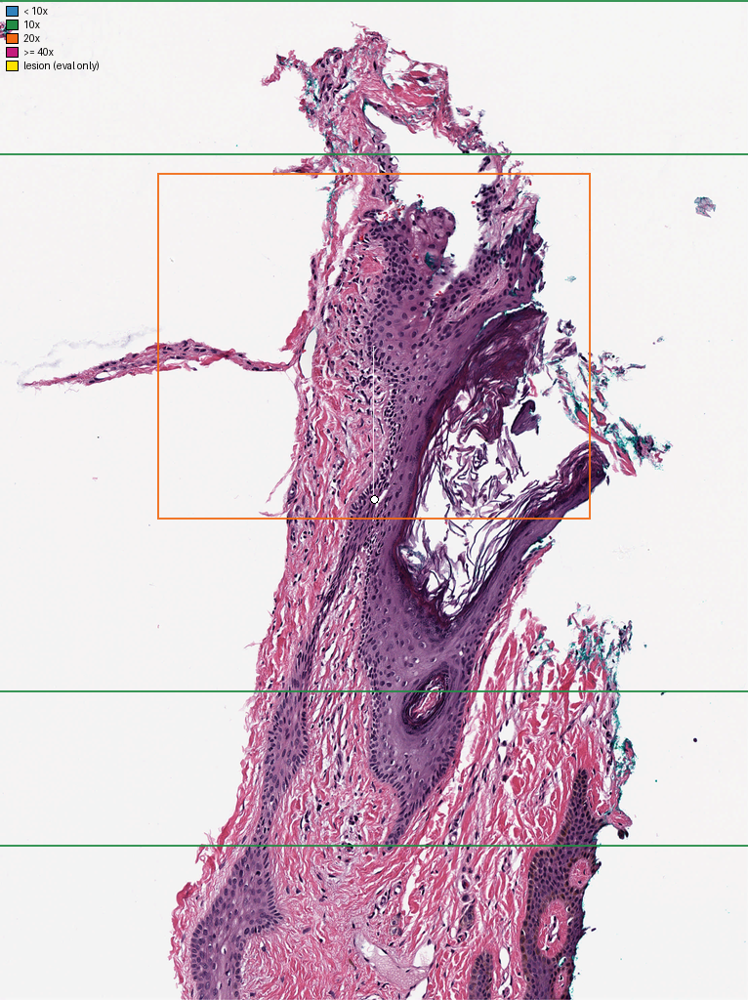
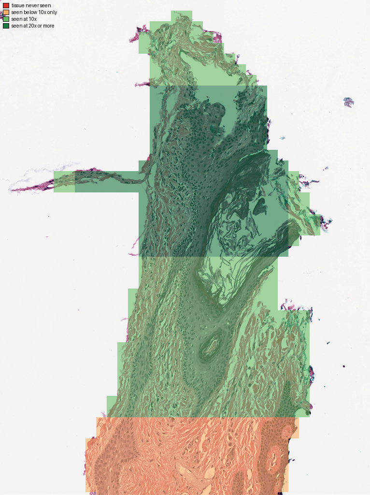

SlideTwin v0.1.1
reads the slide the way a microscope does像显微镜一样阅片
A whole-slide image viewer that pathologists and AI agents read under the same rules. Every pixel an agent sees comes from a logged action, in micrometres and seconds, so each conclusion can be checked against what was actually looked at.
一个让病理医生和 AI agent 在同一套规则下阅读全切片图像的模拟器。agent 看到的每个像素都来自一次有记录的操作，以微米和秒计量，因此每个结论都能对照它真正看过的画面来核验。
pip install "slidetwin[all]"In short. Agents that read whole-slide images already pan and zoom, but each does so inside its own harness, where pixels cost nothing, coordinates are private and only the final answer is scored. SlideTwin is a common environment for people and agents: microscope rules, physical units, a virtual clock, a log of every pixel served and rule checks on every report. A pathologist in the browser and an agent over REST, MCP or Python use the same session, so any reading can be replayed step by step and checked against what was actually seen.
一句话概括。现在读全切片的 agent 已经会平移和缩放，但都在各自的测试框架里进行：像素不计代价，坐标各自定义，最后只按答案打分。SlideTwin 为人和 agent 提供一个统一的环境：显微镜式规则、物理单位、虚拟时钟、记录每个像素的日志，以及对每份报告的规则核验。浏览器里的病理医生和通过 REST、MCP 或 Python 接入的 agent 使用同一个会话，因此任何一次阅片都能逐步重放，并对照真正看过的内容加以核验。
Why SlideTwin
为什么需要 SlideTwin
A pathologist reads a slide by moving a field of view across the tissue at a handful of magnifications, and a report that says “no metastasis” rests on having looked at the whole node. Today's agents navigate too: CPathAgent zooms and moves like a pathologist, and GIANT pans and zooms by requesting crops. But each defines its own actions, coordinates and costs inside its own harness, where any region arrives at full resolution for free and only the final answer is scored.
病理医生阅片时，会在几个固定倍率下移动视野扫过组织，而一份写着“未见转移”的报告，前提是整个淋巴结都看过了。现在的 agent 也会导航：CPathAgent 像病理医生一样放大、移动，GIANT 通过请求裁图来平移和缩放。可它们都在各自的测试框架里自定动作、坐标和代价：任何区域一步就能免费拿到全分辨率图像，最后只给最终答案打分。
Navigation alone therefore cannot tell us whether an agent looked at the evidence it cites, searched enough tissue to support a negative, or read as a pathologist would under the same constraints. SlideTwin gives agents and people the same viewer, clock and log, so these questions have answers.
所以单凭会导航，回答不了这些问题：agent 看过它引用的证据吗？搜索的组织够支撑阴性结论吗？同样约束下，它和病理医生读得一样吗？SlideTwin 让人和 agent 共用同一个阅片器、时钟和日志，这些问题才有答案。
What SlideTwin is
SlideTwin 是什么
- One rule set for people and agents. The web UI uses the same session API as REST, MCP and the Python training interface, so a pathologist's reading and an agent's reading are made of the same actions.
- 人和 agent 同一套规则。网页界面与 REST、MCP、Python 训练接口共用同一个会话 API，病理医生和 agent 的阅片由同样的动作构成。
- Every pixel is logged. Views, thumbnails and crops are actions. The log is the reading: replaying it re-renders every image and compares hashes. In our tests, all replayed readings matched with 0 differences.
- 每个像素都有记录。视野、缩略图和裁图都是动作。日志就是阅片本身：重放时会重新渲染每张图像并比对哈希。在我们的测试中，重放的 次阅片全部一致，差异为 0。
- Physical units. Positions and distances are in micrometres from the slide's corner; time runs on a virtual clock that charges each action, as a viewer would.
- 物理单位。位置和距离以切片左上角为原点、以微米计；时间是虚拟时钟，像真实阅片器那样给每个动作计时。
- Two rule profiles.
viewergives preset magnifications, a fixed field of view and action costs.unconstrainedallows free thumbnails and arbitrary crops, which is what most agent harnesses allow, so the two can be compared on the same slide. - 两套规则档。
viewer：预设倍率、固定视野、动作有代价。unconstrained：缩略图和任意裁图随取随用，相当于大多数 agent 框架的做法。两者可以在同一张切片上直接对比。 - Every common format, chosen by content: Aperio SVS, Hamamatsu NDPI, 3DHistech MRXS, DICOM WSI, Zeiss CZI, Leica SCN, Ventana BIF, Philips TIFF and iSyntax, OME-TIFF and more.
- 支持常见格式，按文件内容自动选择读取器：Aperio SVS、Hamamatsu NDPI、3DHistech MRXS、DICOM WSI、Zeiss CZI、Leica SCN、Ventana BIF、Philips TIFF 与 iSyntax、OME-TIFF 等。
Rules checked on every report
每份报告都要通过的规则
The thresholds come from the protocol file and are drafts awaiting pathologist review.
这些阈值写在协议文件里，目前是草案，有待病理医生审定。
Three ways in
三种接入方式
pip install "slidetwin[all]"
slidetwin serve --demo # web UI, REST and MCP on http://127.0.0.1:7860
# in-process, for training: the same rules, costs and logs, no HTTP
from slidetwin.env import Env, demo_manifest
with Env(demo_manifest()) as env:
step = env.reset("c16_29f5ca") # first view, slide, task, rules
step = env.step({"action": "set_magnification", "mag": 10})
step.image.shape, step.cost_s, step.elapsed_s # (1024, 1280, 3), 0.8, 1.1SlideTwin and QuPath
SlideTwin 与 QuPath
QuPath (Bankhead et al., 2017) is the open-source workhorse for viewing and analysing whole-slide images, and its view tracker can record where a person looked. SlideTwin does not replace it. QuPath answers “what is in this slide?” SlideTwin answers “how was this slide read, and does the conclusion follow from what was seen?”
QuPath（Bankhead 等，2017）是查看和分析全切片图像的主力开源工具，它的视图追踪器（View tracker）也能记录一个人看过哪里。SlideTwin 不是要取代它：QuPath 回答“这张切片里有什么”，SlideTwin 回答“这张切片是怎么读的，结论是否来自看过的内容”。
| QuPath | SlideTwin | |
|---|---|---|
| Built for定位 | Interactive image analysis: annotation, cell detection, biomarker scoring, scripting交互式图像分析：标注、细胞检测、生物标志物评分、脚本 | Measuring how a slide is read, by people or agents, under shared rules在统一规则下，度量人或 agent 如何阅片 |
| Access to pixels像素访问 | Unrestricted: any region at any resolution, for people and scripts不受限：人和脚本都能取任意区域、任意分辨率 | Only through logged actions; a profile sets what is allowed (fields, presets, crops) and what each costs只能通过有记录的动作；规则档决定允许什么（视野、预设倍率、裁图）以及代价 |
| Record of a reading阅片记录 | View tracker: viewer position over time, for playback and time heatmaps视图追踪器：记录视野位置随时间的变化，可回放并生成停留热图 | Every action and every pixel served, with hashes; replays bit-exactly每个动作、提供的每个像素及其哈希值；可逐像素重放 |
| Checks on conclusions结论核验 | None built in无内置核验 | Rules E1–E4 and tissue coverage on every report每份报告都核验 E1–E4 和组织覆盖率 |
| Time时间 | Wall-clock, for a person真实时间，仅限人工操作 | A virtual clock that charges people and agents alike虚拟时钟，人和 agent 一样计时 |
| For agents面向 agent | Groovy scripting and extensions, with full accessGroovy 脚本和扩展，完全访问权限 | REST, MCP tools and a gym-style Env/VecEnv for trainingREST、MCP 工具，以及用于训练的 gym 风格 Env/VecEnv |
| Licence许可 | GPL-3.0 | Apache-2.0 |
Why today's agent systems need a common environment
现有 agent 系统为什么需要一个统一环境
Recent systems take different routes. GIANT lets a general multimodal model pan and zoom over a slide by requesting crops, and argues that thumbnail and random-patch evaluations underestimated these models. CPathAgent navigates with zoom and move steps that mimic a pathologist. PathFinder's agents pick regions from fixed-size patches. Many evaluations of general models give them a single downsampled thumbnail. Each is a real step forward. What they share is the measuring stick, and it has gaps:
近来的系统路线各不相同：GIANT 让通用多模态模型通过请求裁图在切片上平移和缩放，并指出只用缩略图或随机小块的评测低估了这些模型；CPathAgent 以模仿病理医生的放大、移动步骤来导航；PathFinder 的 agent 从固定大小的小块中挑选区域；许多通用模型的评测只给一张降采样的缩略图。它们各有进步，但共用的那把尺子有缺口：
- Pixels are free. A harness can return any region at full resolution in one step, with no time attached. A microscope does not work that way, and behaviour learned in such a harness may not carry over to a viewer.
- 像素是免费的。测试框架一步就能返回任意区域的全分辨率图像，也不计时间。显微镜不是这样工作的，在这种框架里学到的行为未必能迁移到真实阅片器上。
- Answers are scored, evidence is not. A correct “metastasis present” counts the same whether or not the agent ever looked at the tumour.
- 只给答案打分，不看证据。一个正确的“有转移”，不管 agent 有没有看过肿瘤，得分都一样。
- Negatives come without a search. “No metastasis” is the hardest call in sentinel lymph node reading, because it needs the whole node screened; final-answer scoring rewards a guess just as much.
- 阴性结论不需要搜索。在前哨淋巴结阅片中，“未见转移”是最难下的结论，因为要筛查整个淋巴结；只按最终答案打分，猜对一样得分。
- No common units. Pixel coordinates change with the scanner and the pyramid level; a size in pixels is not a size in millimetres.
- 没有统一单位。像素坐标随扫描仪和金字塔层级变化；以像素表示的大小并不是以毫米表示的大小。
- People and agents cannot work together. They use different interfaces with different access, so a pathologist cannot step into an agent's reading, point it to a region or check its work. What the agent hands back is a list of crops or coordinates without reasons or timing: nobody can tell why it went where it went, or whether it looked at what it cites.
- 人和 agent 无法协作。两者用的界面不同、能访问的内容不同，病理医生既不能介入 agent 的阅片、给它指一个区域，也无法检查它的工作。agent 交回来的只是一串裁图或坐标，既没有理由也没有时间：没人说得清它为什么去了那里，也不知道它是否真的看过它所引用的内容。
On SlideTwin these designs become different agents in one environment, each logged, timed and checked the same way:
在 SlideTwin 上，这些设计成为同一个环境里的不同 agent，都以同样的方式被记录、计时和核验：
| Agent designagent 设计 | Rules规则档 | What the model can do模型能做什么 | Budget预算 |
|---|---|---|---|
| Microscope (CPathAgent-like)显微镜式（类 CPathAgent） | viewer | Start from the slide overview; change magnification, move, pan, measure; one 1280 × 1024 field at a time从切片概览开始；换倍率、移动、平移、测量；每次只看一个 1280 × 1024 视野 | 24 |
| Free crops (GIANT-style)任意裁图（GIANT 式） | unconstrained | Start from a thumbnail with a µm grid; request any rectangle at up to 1280 px从带微米网格的缩略图开始；请求任意矩形，最长边至多 1280 px | 12 |
| Thumbnail only (slide-level)仅缩略图（切片级） | unconstrained | One downsampled image of the whole slide, then the answer看一张整片降采样图像，然后作答 | 1 |
| SlideTwin agent (tool calls)SlideTwin 自带 agent（工具调用） | viewer | The released agent: native tool calls, writes its own report随包发布的 agent：原生工具调用，自己写报告 | 30 |
The first three use a plain-text protocol (one JSON action per reply), so models without tool calling can take part; the harness turns each answer into a SlideTwin report. The SlideTwin agent needs native tool calls.
前三种使用纯文本协议（每次回复一个 JSON 动作），这样不支持工具调用的模型也能参与；框架把每个答案转成 SlideTwin 报告。SlideTwin 自带 agent 需要原生工具调用。
What a replay shows
回放能看到什么
We gave an open model, Qwen3-VL-8B, a CC0 test slide under the microscope rules (CMU-1: skin, four pieces of tissue over 23 × 16 mm) and rendered its log. It jumped from the overview straight to 20×, landed on the empty glass between the pieces and panned seven times. When a field finally reached the edge of one piece, it reported a 0.8 mm micro-metastasis “in the lymph node tissue”. The receipt passes E1–E3: the cited field exists, was seen at 20×, and 0.8 mm fits the micro category, although the model never measured anything. A final answer hides what the log shows: in 7 virtual seconds the model saw 0.4% of the tissue at 10× or more.
我们让一个开源模型 Qwen3-VL-8B 在显微镜规则下阅读一张 CC0 测试切片（CMU-1：皮肤组织，四块组织分布在 23 × 16 mm 范围内），并把日志渲染出来。它从概览直接跳到 20×，落在组织块之间的空白玻璃上，连续平移了七次；等视野终于碰到一块组织的边缘，它就报告了“淋巴结组织中”一个 0.8 mm 的微转移。回执的 E1–E3 都通过：引用的视野存在、在 20× 下看过，0.8 mm 也落在微转移的范围内，尽管模型从未做过任何测量。只看最终答案会掩盖日志揭示的事实：在 7 秒虚拟时间里，它只在 10× 以上看过 0.4% 的组织。
A negative call needs the opposite: rule E4 accepts “no metastasis” only after 98% of the tissue has been seen at 10× or more. On the same virtual clock, SlideTwin's serpentine scan needs about two minutes to get there on this slide.
阴性结论需要的恰恰相反：按规则 E4，要在 10× 以上看过 98% 的组织，“未见转移”才成立。在同一个虚拟时钟下，SlideTwin 的蛇形扫描在这张切片上大约需要两分钟才能做到。
One reading, step by step
一次阅片的全过程
Qwen3-VL-8B read the CC0 test slide through SlideTwin's own agent. In 10 model turns (6 seconds of compute, 10.8 virtual seconds) it opened the thumbnail, screened at 10×, moved, zoomed to 20×, measured twice and reported a 2.0 mm macro-metastasis. The slide is skin, not a lymph node; the answer is wrong, and the receipt says so without any ground truth:
Qwen3-VL-8B 通过 SlideTwin 自带的 agent 阅读这张 CC0 测试切片。10 轮模型调用（计算 6 秒，虚拟时间 10.8 秒）内，它打开缩略图、在 10× 下筛查、移动、放大到 20×、测量两次，然后报告了一个 2.0 mm 的宏转移。可这张切片是皮肤，不是淋巴结，答案是错的；即使不用标准答案，回执也指出了问题：


All pictures on this page show CC0 OpenSlide test slides (CMU-1 and a small region of it).
本页所有图片均来自 CC0 许可的 OpenSlide 测试切片（CMU-1 及其中的一小块区域）。
Limits of this release
这一版的局限
- The rule thresholds and the cost model are drafts. They need pathologist review and calibration on human readings, which the pilot in the repository is set up to collect.
- 规则阈值和代价模型都是草案，需要病理医生审定，也需要用人类阅片数据校准；仓库里的试点方案就是为收集这些数据准备的。
- Reports follow one protocol, sentinel lymph node metastasis. Other tasks can already be read, timed and logged, but their answers are not checked by rules yet.
- 报告目前只遵循一个协议：前哨淋巴结转移。其他任务已经可以阅读、计时和记录，但答案还没有规则核验。
- The rules check what a report cites, not what the cited fields show: in the replay above, E1–E3 pass although the size was never measured. The log keeps what such checks would need.
- 规则核验的是报告引用了什么，而不是被引用的视野里有什么：在上面的回放里，大小从未测量过，E1–E3 却都通过了。日志里保留了做这类核验所需的全部信息。
- None of the models was trained to navigate a viewer. The environment exists so that such training, and fair comparisons after it, become possible.
- 这些模型都没有针对阅片器导航做过训练。SlideTwin 正是为了让这样的训练、以及训练后的公平比较成为可能。
- The replays on this page are single readings by one open model. They show what a log reveals, not how well models read slides.
- 本页的回放都是同一个开源模型的单次阅片，展示的是日志能揭示什么，而不是模型读片的好坏。
Get started
上手
pip install "slidetwin[all]"
slidetwin serve --demo # 3 public slides, 0.9 GB, http://127.0.0.1:7860
slidetwin mcp --slides DIR --manifest manifest.yaml # MCP over stdio for a local agent
slidetwin replay --demo logs/sessions/<id>.jsonl # replay a reading, report differences
# an open VLM through vLLM (tool calls on), read by SlideTwin's agent
vllm serve Qwen/Qwen3-VL-8B-Instruct --port 8000 --max-model-len 65536 \
--enable-auto-tool-choice --tool-call-parser hermes --limit-mm-per-prompt '{"image": 40}'
python -m slidetwin.agents llm --backend openai --base-url http://localhost:8000/v1 \
--model Qwen/Qwen3-VL-8B-Instruct --env http://localhost:7860 --slide cmu1_small --max-turns 16Cite
引用
If you use SlideTwin in your work, please cite it:
如果你的工作用到了 SlideTwin，请引用：
@software{zhang2026slidetwin,
author = {Zhang, Wenhao and Zhou, Zhongliang and Li, Sheng},
title = {SlideTwin: an agent-operable whole-slide image viewer simulator},
year = {2026},
version = {0.1.1},
url = {https://github.com/wenhaozhang0066/SlideTwin}
}Acknowledgements
致谢
The CC0 test slides CMU-1 and CMU-1-Small-Region come from the OpenSlide test data (Carnegie Mellon University). The replays use Qwen3-VL-8B-Instruct, released by the Qwen team.
CC0 测试切片 CMU-1 与 CMU-1-Small-Region 来自 OpenSlide 测试数据（卡内基梅隆大学）。回放中使用的模型是 Qwen 团队发布的 Qwen3-VL-8B-Instruct。
References: GIANT, Buckley et al., arXiv:2511.19652 (2025). CPathAgent, arXiv:2505.20510 (NeurIPS 2025). PathFinder, Ghezloo et al., arXiv:2502.08916 (2025). QuPath, Bankhead et al., Scientific Reports 7:16878 (2017).
参考文献：GIANT，Buckley 等，arXiv:2511.19652（2025）。CPathAgent，arXiv:2505.20510（NeurIPS 2025）。PathFinder，Ghezloo 等，arXiv:2502.08916（2025）。QuPath，Bankhead 等，Scientific Reports 7:16878（2017）。